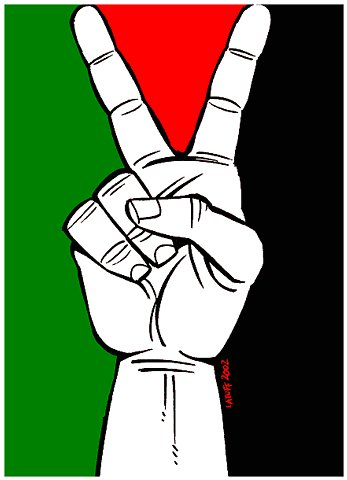

|
|

گردهمایی زنان و مردانِ نویسنده ی فلسطینی در اسلو: کار فرهنگی بخشی از مبارزه است
شنبه2 مهر 1390
عنا والدث خبرنگار تارنمای پرسپکتیو فمینیستی در گردهمایی نویسندگان فلسطینی که در تعطیات هقته گذشته در اسلوبرگزار شد، شرکت کرده و در گزارشی از نقش انرژی زای ادبیات در مبارزات آزادی خواهانه فلسطینی ها خبر می دهد.
این نویسندگان دراسلو گرد هم آمدند تا نشان دهند که کار فرهنگی نیز بخشی از مبارزه است و ادبیات و زبان هویت فلسطینی را پایه ریزی می کند. ابراهیم نصرالله، متولد اردوگاههای پناهندگی در اردن و ناتالی هندل متولد بتلهلم بین نیویورک و پاریس در تردد هستند. هوظام هبایب متولد کویت و مقیم ابوظبی، سوسن ابوالهوا متولد کویت و مقیم آمریکا، محمد شکیر مقیم اورشلیم، حسن خادر مقیم رماالله و محمد عمر تنها شرکت کننده از غزه، نویسندگان حاضردر این گردهمایی بودند. مخرج مشترک آنها، نویسنده و روزنامه نگار بودن آنان است. برخی از آنان در مناطق اشغالی زندگی می کنند و برخی دیگر پراکنده اند، اما همه آنها خود را بخشی از درخت تنومندی که از شعر، رمان و مقالات پرورش یافته است، می دانند.
هیچیک از آنان قبلن در اسلو نبوده اند، آنان با حیرت در شهری که در تاریخ مدرن فلسطین جایگاه خاصی دارد، قدم میزنند. قرارداد اسلو خودمختاری خاصی به فلسطینی ها بخشید اما در برقراری صلح پایدار ناموفق ماند. هم اکنون همه از تلاش جدید برای واداشتن سازمان ملل در به رسمیت شناختن دولت مستقل فلسطینی صحبت می کردند. اما هیچکس به خودش جرات نمی داد انتظارات زیادی داشته باشد. آنان محتاط بودند. وزیر فرهنگ فلسطین نیز در آنجا حضور داشت و کسی نمی خواسنت ابتکار عمل محمود عباس را مورد انتقاد قرار دهد.
خبرنگاران سوال کردند چرا نویسندگان فلسطینی در مبارزات سیاسی فعال هستند. همگی خندیدند، در فلسطین ادبیات سیاسی است و شاعرانی چون محمود درویش و فدوی طوقان قهرمانان مقاومت تلقی می شوند. وزیر دفاع اسراییل گفته است که اشعارفدوی طوقان خطرناکتر از بیست آکتیویست است.
سازماندهی در حاشیه
هوظام هبایب و ابراهیم نصرالله در اردن تحت سانسور قرار گرفته و غیر بیطرفانه بودن ادبیات را تجربه کردند. داستانهای هبایب سانسور شدند چرا که صحبت از سکس و تمایلات نفسانی برای زن عرب زشت و نامناسب قلمداد می شود. جالبترین بخش نشست نویسندگان فلسطینی در اسلو آنجا بود که آنان نشان دادند که موفق به تشکیل جامعه قوی دمکراتیک در حاشیه در خارج شده اند. آنان در سازمانها و انجمنهای غیر دولتی سازماندهی شده و می خواهند به دنیا نشان دهند که آماده گی تشکیل یک دولت مستقل را دارند.
دولت حماس در غزه از طرف نویسندگان شدیدن مورد انتقاد قرار گرفت. یک کتاب کودکان که در غزه تحت سانسور قرار گرفت حاوی عکسهایی از دختران و پسران نشسته زیر درختی که عکس قلبی بر آن حک شده بود، بود. قلب سمبل جهانی عشق. اما از نظر حماس این عکس کودکان را به زندگی بی قید و بند تشویق می کرد و به همین دلیل کتابها را از مدارس جمع کردند.
زندانی با قفلی در دو جهت
سفر به اسلو امکان دیدار را برای نویسندگان فلسطینی فراهم آورد. از آنجا که آنان اجازه مسافرت به فلسطین را ندارند، بایستی از تمامی موقعیتهای بدست آمده برای دیدار با همکاران و هموطنان خویش در خارج از مرزها، استفاده کنند. تعدای از آنان دارای پاسپورتهای خارجی هستند و اگر شانس داشته باشند اسراییل برای آنان ویزای ورود به کشور را جهت دیدار از نمایشگاههای کتاب و جلسات نویسندگان صادر می کند، اما آنان همواره از ممنوعیت خروج از کشور در هراسند. عمر محمد که در غزه زندگی می کند می گوید که "ما در یک زندان بزرگ که کلیدش در دست اسراییل است، زندگی می کنیم و بدون حمایت سازمان ملل و همبستگی عمومی محکوم هستیم".